Driving Innovation with Precision Aluminum
정밀한 가공기술로 완성한 자동차 부품과 기술력으로 모빌리티 산업의 미래를 이끌어갑니다.
정밀한 가공기술로 완성한 자동차 부품과 기술력으로 모빌리티 산업의 미래를 이끌어갑니다.
설계부터 생산, 수출까지 신뢰를 바탕으로 완성한 알루미늄 솔루션을 전 세계에 전달합니다.
불필요한 무게는 줄이고, 성능은 그대로. 경량화를 통해 더 넓은 가능성을 제시합니다.
알루미늄은 재활용률이 높은 친환경 소재입니다. 지속 가능한 미래를 위한 현명한 선택이 됩니다.
알루미늄을 압출하고 가공해 자동차, 산업용, 건축 부품을 만듭니다. 연구개발, 전문 인력, 공급망으로 더 가볍고 더 강하게.
재활용률이 높은 알루미늄으로 더 가볍게 만들어 대구에서 북미까지 보냅니다. 사람, 기술, 환경을 생각하는 사회적 기업의 방식입니다.
Scroll to open the frame사람과 환경을 생각하는 지속 가능한 솔루션으로 글로벌 시장에서 함께 성장해 나가겠습니다.
네 개의 산업군, 26장의 실제 부품 사진. 카테고리를 고르면 부품 목록과 사진이 바뀝니다.
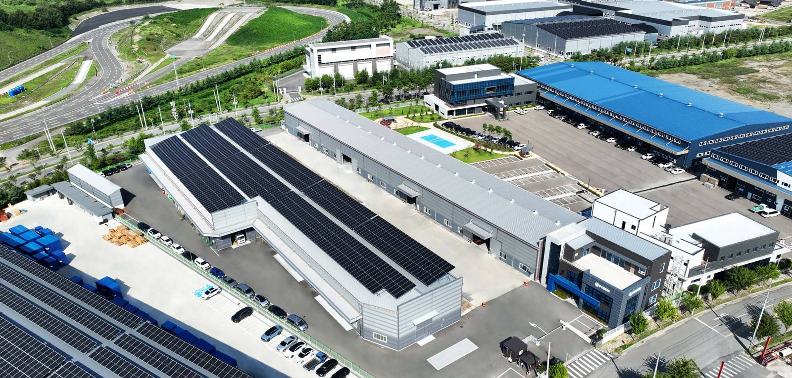
불필요한 무게는 줄이고, 성능은 그대로. 알루미늄은 재활용률이 높은 친환경 소재이고, 경량화는 모빌리티의 다음 가능성입니다.
멀티홀로 단면의 폭, 높이, 셀 수, 살두께를 바꿔 보세요. 미터당 중량과 외접원 지름으로 어느 프레스에서 뽑아야 하는지 가늠할 수 있습니다. 스크롤하면 프레스가 빌렛을 밀어 프로파일이 금형 밖으로 뽑혀 나옵니다.
중량은 알루미늄 밀도 2.7 g/cm³ 기준 단순 계산이며, 프레스 선정은 외접원 지름 120 mm를 경계로 한 참고값입니다. 실제 사양은 문의해 주세요.
대구 국가산단 본사 공장의 설비 현황과 시험장비 현황입니다. 막대 길이는 보유 대수에 비례합니다.
| Equipment | Brand | Purpose | Qty |
|---|
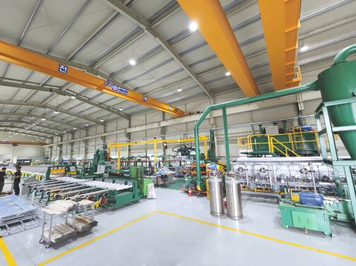
Machining hall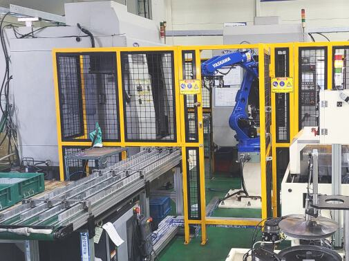
Extrusion line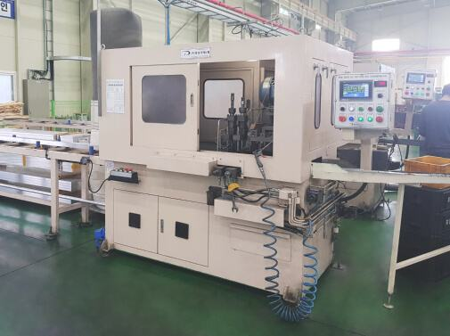
Heat treatment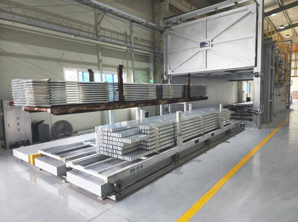
Pipe line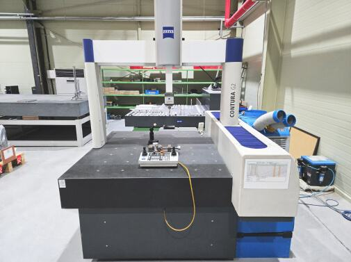
CMM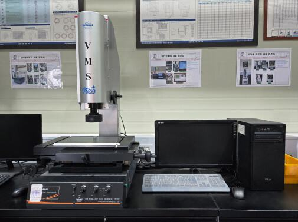
UTM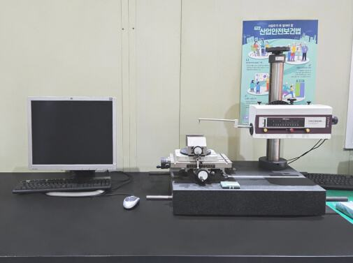
Video measuring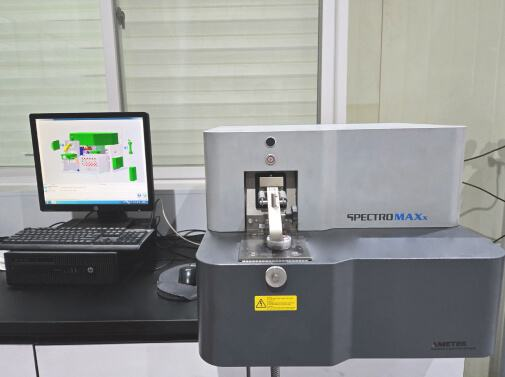
Hardness기업부설연구소의 연구 목표는 지속가능한 친환경 경량 부품 개발입니다. 그 출발점은 공정의 온도와 속도를 숫자로 보는 일입니다.
알루미늄 압출 공정 데이터 수집 시스템(Data Acquisition System) 개선
AL 압출 공정의 가공조건과 수율, 불량율 간의 연관통계 시각화 분석
진행 중인 과제는 연구현황 게시판에 순차적으로 공개됩니다.
2단 인버터 공기압축기를 도입해 기존 대비 에너지 효율을 높이고 추가 절감을 실현하여 온실가스 저감에 기여합니다.
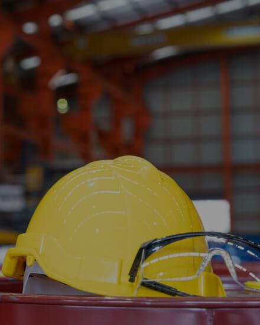
AI 기반 SAFETY 시스템이 작업자의 위험 구역 접근을 감지하여 경고 알림을 제공함으로써 재해를 예방하고 안전한 작업환경을 조성합니다.
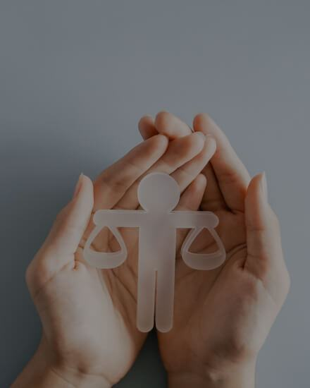
고효율 설비와 스마트 안전 시스템에 대한 투자로 에너지, 안전 중심의 지속 가능한 경영체계를 구축하고 있습니다.
본사 공장은 대구 국가산단에, 영업사무소와 네 곳의 물류센터는 미국과 멕시코 자동차 벨트에 있습니다. 태평양을 건너는 선이 곧 납품 경로입니다.
여섯 해 동안 프레스를 들이고, 인증을 쌓고, 바다 건너 물류센터를 열었습니다. 월 단위 전체 연혁입니다.
Q.A.C-Flow
스마트폰 하나로 측정, 판정, 보고서 발행까지. 디비전 공장에서 직접 만들고 검증했습니다.
대구 본사 공장 사내 검증 · IATF 16949
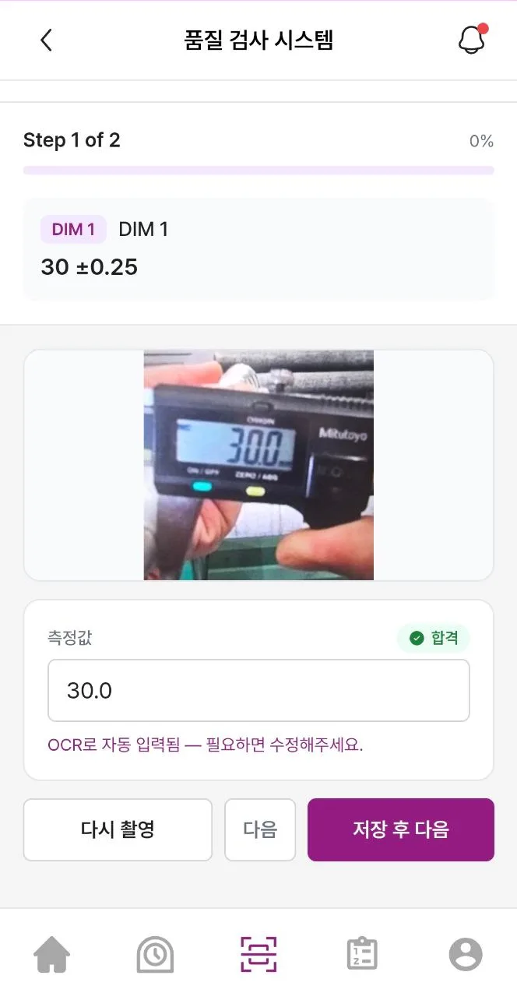
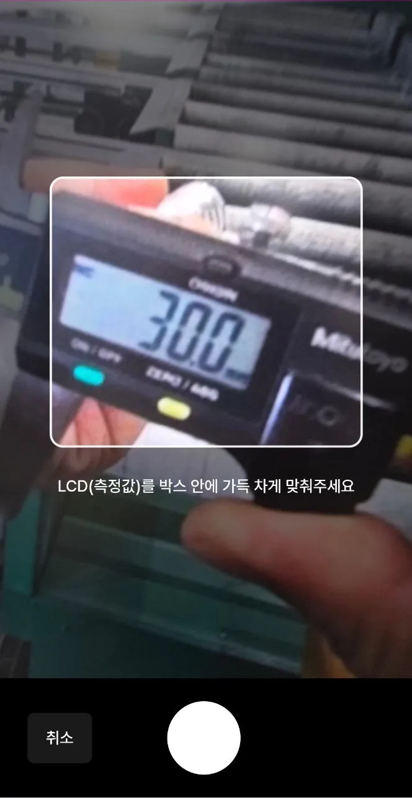
장비 교체는 필요 없습니다. 지금 쓰는 캘리퍼스와 측정기, 그리고 스마트폰 카메라면 됩니다. 모바일과 PC 웹을 지원합니다.
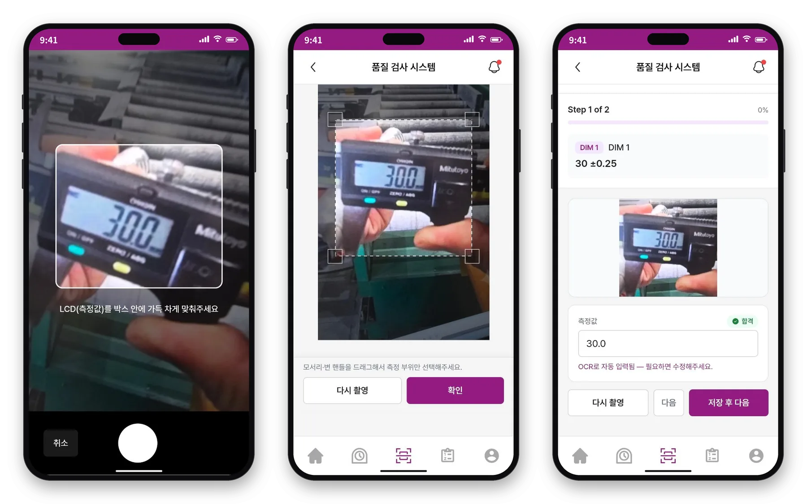
측정기 화면에 카메라를 맞추고 촬영합니다.
측정값 부분만 남도록 영역을 맞춥니다.
값이 자동으로 입력되고, 그 자리에서 공차 기준으로 판정됩니다.
생산관리자가 품목, 설비, 검사 시점을 등록합니다.
작업자가 측정기를 촬영하고, OCR이 값을 입력합니다.
순회검사자가 같은 항목을 다시 측정하고 사진을 대조합니다.
품질관리자가 두 결과를 나란히 보고 결재합니다.
검사보고서가 자동으로 발행되고 PDF로 내려받을 수 있습니다.
측정값은 측정하는 그 순간 현장 모니터에 올라옵니다. 설비별 진행 현황, 공차 대비 측정값, 불량과 조치, 검사 지연 알림까지.
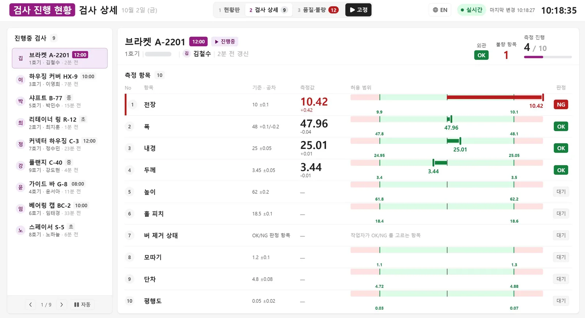
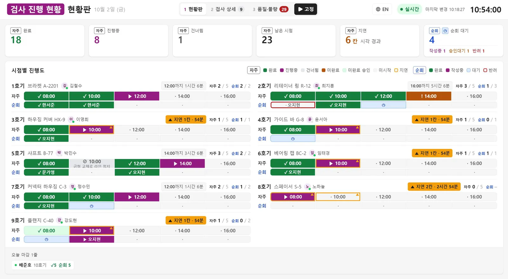
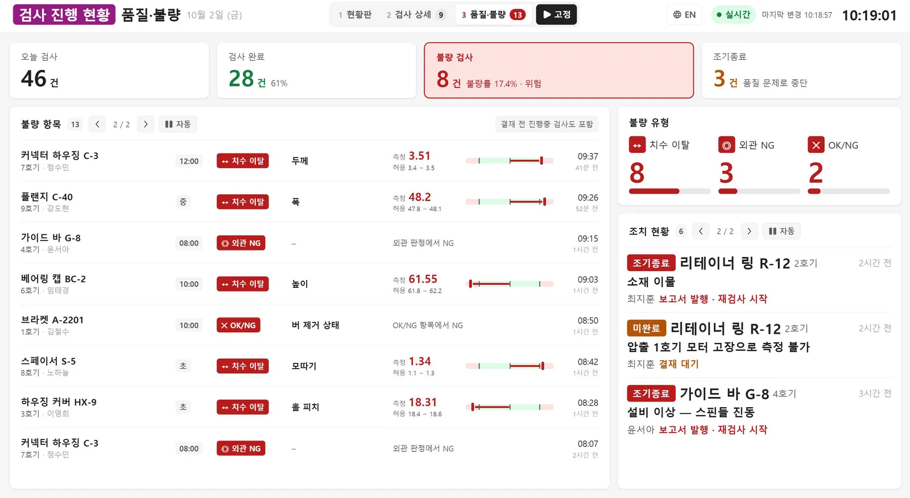
사내 운영 화면(한국어 UI). 고객사명은 가렸습니다.
자주검사와 순회검사 결과가 나란히 놓여, 불일치는 결재 전에 드러나고 모든 기록은 고객사 감사와 IATF 심사에서 추적할 수 있습니다.
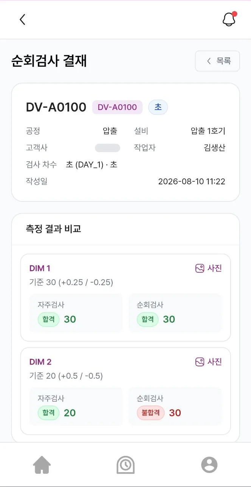
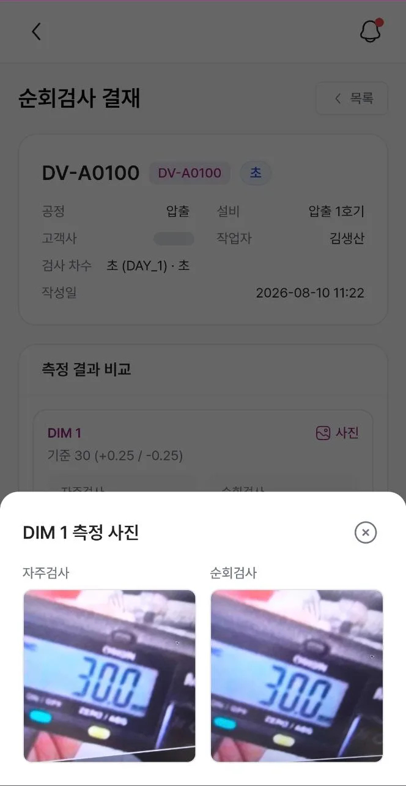
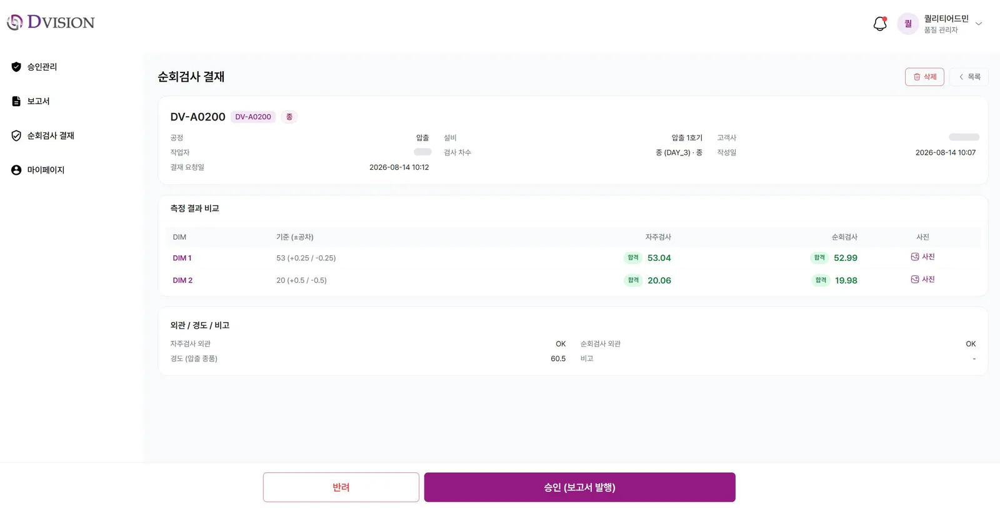
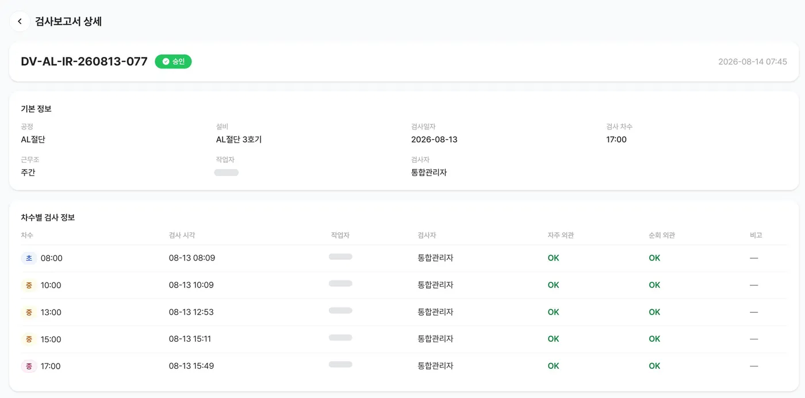
측정값, 공차, 사진, 결재가 한 기록에 담깁니다.
품목, 설비, 검사 시점별로 매일 쌓입니다.
불량 예측과 공정 최적화를 위한 바탕이 됩니다.
대구 공장 사내 운영
We are here사외 현장 실증
상용화
축적된 검사 데이터 기반
더 나은 사용자 경험을 제공하기 위해 공식 홈페이지를 새롭게 개편하였습니다. 이번 리뉴얼은 저희의 혁신과 접근성 향상을 위한 노력을 반영하며, 보다 직관적인 내비게이션과 최신 정보를 제공합니다.
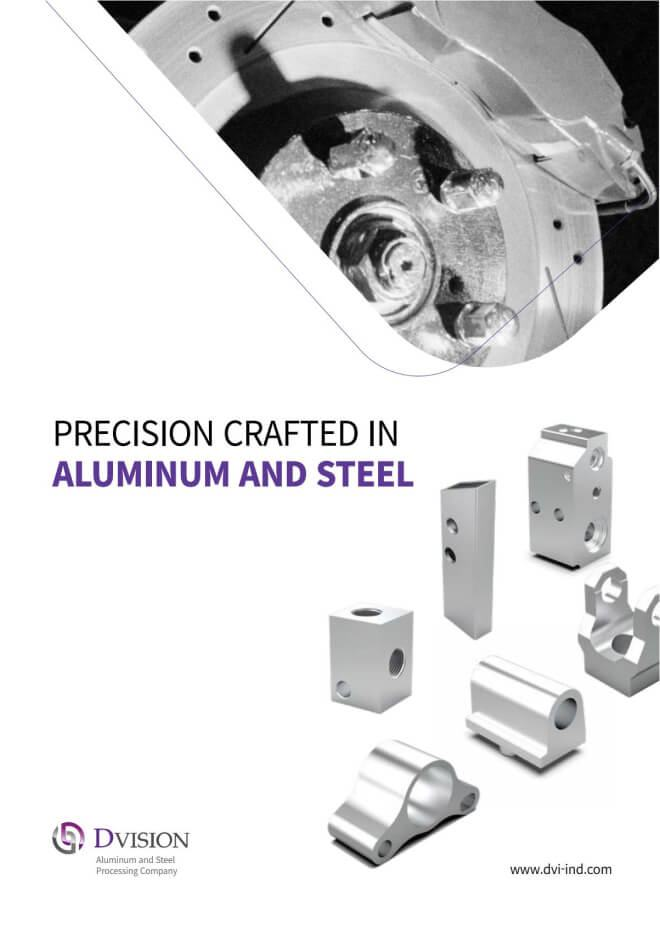
제품군, 설비, 공정, 인증 현황을 담은 공식 카탈로그입니다.